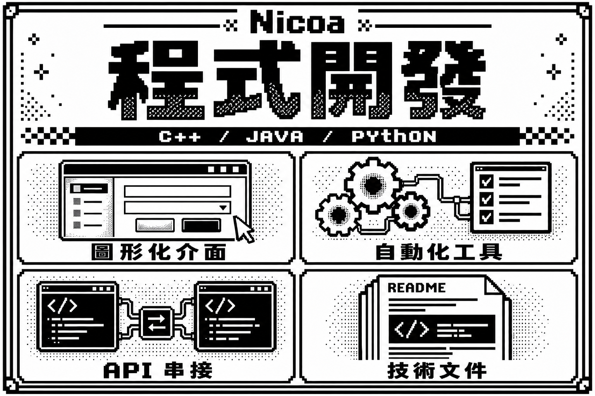
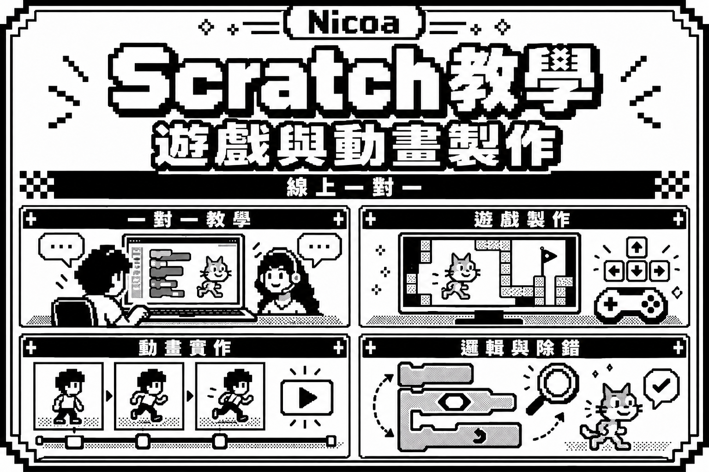
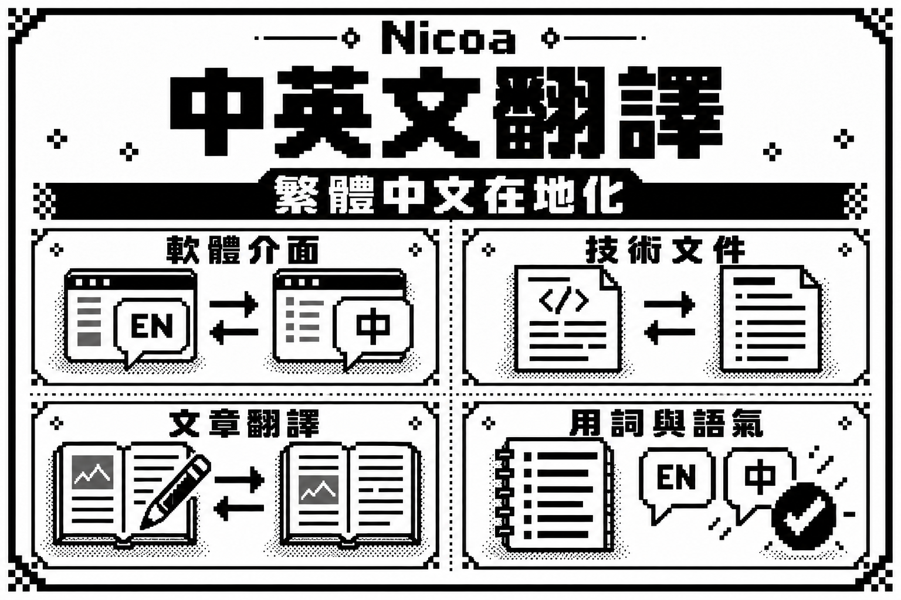
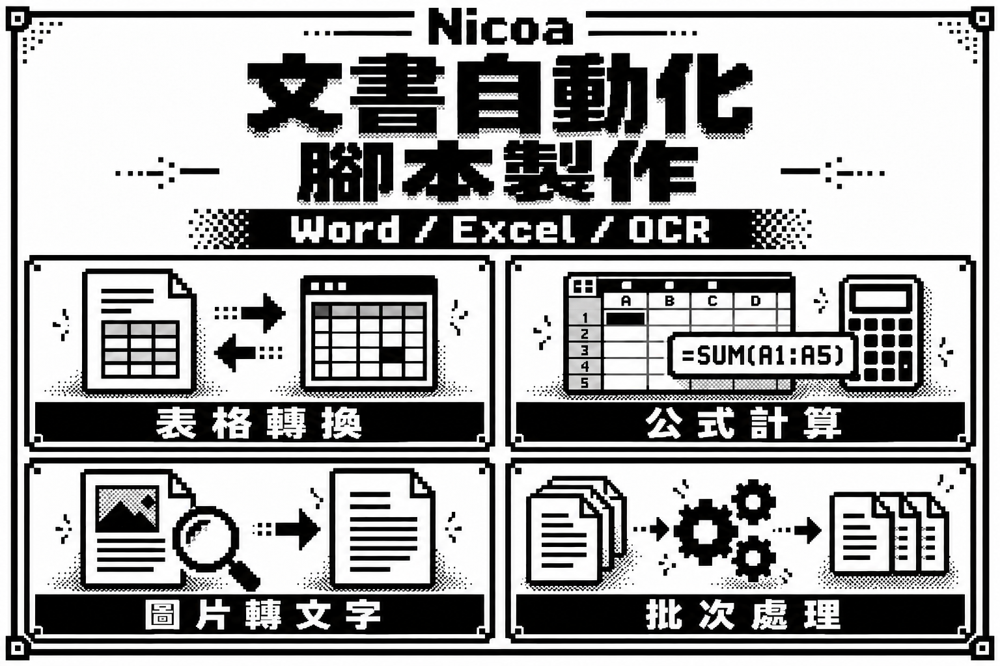
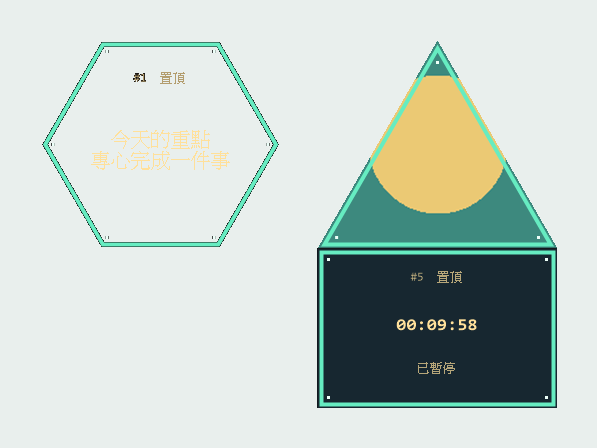

圖形化介面
滑鼠互動滑鼠移入／Tab 選取；手機點選欄位。
等你選一個欄位。
A LITTLE STUDIO. A LOT OF IDEAS.
寫程式，也寫文字。
在工具、教學與翻譯之間，
陪你把「如果可以」變成「真的可以」。
C++ / PYTHON / JAVA / SCRATCH
 NICOA THE SIX
NICOA THE SIXPIXEL LAB / FOUR SERVICES, SIXTEEN SCENES
移到各張海報的標題上，看看顏色。
右上角可各自切換原圖與動畫。

目前顯示原圖滑鼠移入／Tab 選取；手機點選欄位。
等你選一個欄位。
齒輪轉動，讓重複的工作逐一完成。
轉動 → 傳送 → 完成
請求送出去，回應沿著另一條線返回。
CLIENT ⇄ SERVER
從第一行開始，把想法寫成清楚的文件。
寫入 → 檢查 → 存檔
標題可懸停或點選變色；動畫模式的介面欄位可懸停、Tab 選取或點選反白。四格保持原圖排列。
02 / LEARN & PLAY
橙色 → 珊瑚粉

03 / WORDS ACROSS WORLDS
藍色 → 紫色

04 / LESS REPETITION, MORE POSSIBILITIES
綠色 → 青色

01 / CHOOSE YOUR QUEST
選一個起點。
我們一起把事情做好。
＋ 每個任務都不同，內容、交期與報價，我們一起確認。
02 / THE HUMAN BEHIND THE PIXELS
[ PLAYER PROFILE ]
你好，我是 Nicoa The Six。
喜歡文字，也喜歡程式。相信好的工具與清楚的表達，能讓日常少一點繁瑣，多一點可能。
這裡放著我的實作、筆記與各種嘗試。無論你帶來的是一個問題，還是一個還沒成形的點子，都歡迎一起聊聊。
到 GitHub 看看我的實作 ↗03 / SAVE FILES
從一個想法出發，
留下可以使用的作品。

SAVE_001